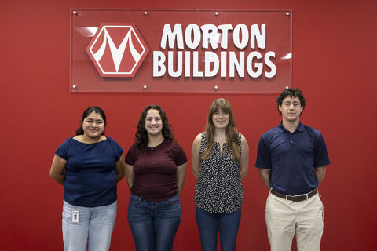

Application Development InternMorton BuildingsMay 2026 - August 2026
Developed internal web application features across both frontend and backend components, and collaborated with technology team members to design and implement features based on internal business requirements.
|
 |
| Phi Sigma Rho | Girls Who Code |
|---|---|
December 2025 - December 2026
Phi Sigma Rho is social sorority built specifically for women studying STEM disciplines who have heavier workloads. |
August 2026 - May 2027Every Sunday, we spend a few hours teaching young girls essential coding concepts. After a semester of teaching and guiding them through projects to learn, we have them make their own project with the languages they have learned! |